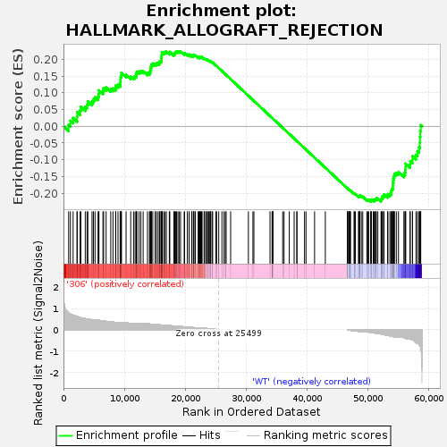
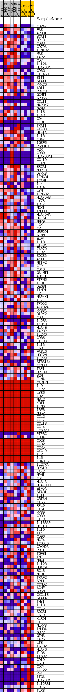
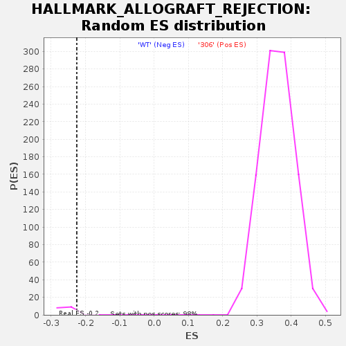

| | | Dataset | 306_WT_express.306_WT.cls#306_versus_WT |
| Phenotype | 306_WT.cls#306_versus_WT |
| Upregulated in class | WT |
| GeneSet | HALLMARK_ALLOGRAFT_REJECTION |
| Enrichment Score (ES) | -0.22538272 |
| Normalized Enrichment Score (NES) | -0.8563328 |
| Nominal p-value | 1.0 |
| FDR q-value | 0.88809794 |
| FWER p-Value | 0.9 |
Table: GSEA Results Summary

Fig 1: Enrichment plot: HALLMARK_ALLOGRAFT_REJECTION
Profile of the Running ES Score & Positions of GeneSet Members on the Rank Ordered List
| SYMBOL | TITLE | RANK IN GENE LIST | RANK METRIC SCORE | RUNNING ES | CORE ENRICHMENT | | 1 | CD247 | NNN | 845 | 0.803 | 0.0042 | Yes |
| 2 | FAS | NNN | 1140 | 0.739 | 0.0163 | Yes |
| 3 | APBB1 | NNN | 1581 | 0.681 | 0.0245 | Yes |
| 4 | BCAT1 | NNN | 2226 | 0.622 | 0.0279 | Yes |
| 5 | RPL3L | NNN | 2241 | 0.621 | 0.0421 | Yes |
| 6 | CD8B | NNN | 2730 | 0.577 | 0.0471 | Yes |
| 7 | CD79A | NNN | 2854 | 0.570 | 0.0582 | Yes |
| 8 | IFNAR2 | NNN | 3572 | 0.526 | 0.0581 | Yes |
| 9 | WAS | NNN | 3863 | 0.506 | 0.0649 | Yes |
| 10 | TAP2 | NNN | 4004 | 0.497 | 0.0740 | Yes |
| 11 | CD7 | NNN | 4683 | 0.477 | 0.0735 | Yes |
| 12 | IL12A | NNN | 4914 | 0.471 | 0.0805 | Yes |
| 13 | HLA-DOA | NNN | 5179 | 0.465 | 0.0867 | Yes |
| 14 | CD3G | NNN | 5676 | 0.455 | 0.0888 | Yes |
| 15 | EIF4G3 | NNN | 5786 | 0.450 | 0.0973 | Yes |
| 16 | SIT1 | NNN | 5821 | 0.448 | 0.1071 | Yes |
| 17 | STAT1 | NNN | 6478 | 0.419 | 0.1056 | Yes |
| 18 | PRKCG | NNN | 6590 | 0.414 | 0.1133 | Yes |
| 19 | ABI1 | NNN | 6999 | 0.397 | 0.1156 | Yes |
| 20 | PRKCB | NNN | 7759 | 0.370 | 0.1112 | Yes |
| 21 | GCNT1 | NNN | 8124 | 0.360 | 0.1133 | Yes |
| 22 | GPR65 | NNN | 8558 | 0.351 | 0.1140 | Yes |
| 23 | CCL11 | NNN | 8583 | 0.351 | 0.1218 | Yes |
| 24 | MAP3K7 | NNN | 8950 | 0.342 | 0.1234 | Yes |
| 25 | GZMB | NNN | 9301 | 0.331 | 0.1251 | Yes |
| 26 | IL16 | NNN | 9348 | 0.329 | 0.1319 | Yes |
| 27 | IL4R | NNN | 9367 | 0.328 | 0.1392 | Yes |
| 28 | CD4 | NNN | 9377 | 0.328 | 0.1467 | Yes |
| 29 | CCR1 | NNN | 9488 | 0.328 | 0.1524 | Yes |
| 30 | TRAT1 | NNN | 9504 | 0.328 | 0.1597 | Yes |
| 31 | CXCR3 | NNN | 10274 | 0.320 | 0.1540 | Yes |
| 32 | HIF1A | NNN | 11034 | 0.302 | 0.1481 | Yes |
| 33 | IL1B | NNN | 11498 | 0.289 | 0.1469 | Yes |
| 34 | CD47 | NNN | 11755 | 0.281 | 0.1490 | Yes |
| 35 | IGSF6 | NNN | 11942 | 0.277 | 0.1522 | Yes |
| 36 | PSMB10 | NNN | 11951 | 0.277 | 0.1585 | Yes |
| 37 | F2R | NNN | 12052 | 0.274 | 0.1632 | Yes |
| 38 | CD80 | NNN | 12411 | 0.274 | 0.1634 | Yes |
| 39 | HLA-DQA1 | NNN | 12702 | 0.274 | 0.1648 | Yes |
| 40 | CCL19 | NNN | 13077 | 0.274 | 0.1648 | Yes |
| 41 | ELANE | NNN | 13788 | 0.274 | 0.1590 | Yes |
| 42 | BRCA1 | NNN | 14115 | 0.271 | 0.1597 | Yes |
| 43 | MRPL3 | NNN | 14217 | 0.268 | 0.1642 | Yes |
| 44 | DYRK3 | NNN | 14257 | 0.267 | 0.1697 | Yes |
| 45 | IFNGR1 | NNN | 14358 | 0.264 | 0.1741 | Yes |
| 46 | ICAM1 | NNN | 14387 | 0.264 | 0.1797 | Yes |
| 47 | IL4 | NNN | 14460 | 0.262 | 0.1846 | Yes |
| 48 | IRF4 | NNN | 14659 | 0.256 | 0.1871 | Yes |
| 49 | LYN | NNN | 15048 | 0.248 | 0.1863 | Yes |
| 50 | IFNGR2 | NNN | 15279 | 0.243 | 0.1880 | Yes |
| 51 | HLA-DMB | NNN | 15551 | 0.237 | 0.1888 | Yes |
| 52 | LY75 | NNN | 15792 | 0.232 | 0.1901 | Yes |
| 53 | IRF7 | NNN | 15836 | 0.231 | 0.1947 | Yes |
| 54 | NCK1 | NNN | 16055 | 0.225 | 0.1962 | Yes |
| 55 | INHBB | NNN | 16058 | 0.225 | 0.2014 | Yes |
| 56 | HLA-DMA | NNN | 16099 | 0.224 | 0.2059 | Yes |
| 57 | HCLS1 | NNN | 16111 | 0.224 | 0.2109 | Yes |
| 58 | MMP9 | NNN | 16148 | 0.222 | 0.2154 | Yes |
| 59 | LCK | NNN | 16158 | 0.222 | 0.2204 | Yes |
| 60 | C2 | NNN | 16441 | 0.216 | 0.2206 | Yes |
| 61 | UBE2D1 | NNN | 16655 | 0.211 | 0.2218 | Yes |
| 62 | GLMN | NNN | 16889 | 0.205 | 0.2226 | Yes |
| 63 | ELF4 | NNN | 17369 | 0.194 | 0.2189 | Yes |
| 64 | IL18 | NNN | 17452 | 0.192 | 0.2219 | Yes |
| 65 | EIF3A | NNN | 18109 | 0.180 | 0.2149 | Yes |
| 66 | ZAP70 | NNN | 18255 | 0.177 | 0.2165 | Yes |
| 67 | TLR2 | NNN | 18283 | 0.176 | 0.2201 | Yes |
| 68 | SOCS5 | NNN | 18430 | 0.172 | 0.2216 | Yes |
| 69 | AKT1 | NNN | 18555 | 0.169 | 0.2234 | Yes |
| 70 | MTIF2 | NNN | 18783 | 0.164 | 0.2234 | Yes |
| 71 | CFP | NNN | 18980 | 0.159 | 0.2237 | Yes |
| 72 | CD40 | NNN | 19216 | 0.154 | 0.2233 | No |
| 73 | GALNT1 | NNN | 19812 | 0.142 | 0.2164 | No |
| 74 | ABCE1 | NNN | 19881 | 0.140 | 0.2185 | No |
| 75 | PTPN6 | NNN | 20324 | 0.128 | 0.2139 | No |
| 76 | TLR1 | NNN | 20607 | 0.122 | 0.2120 | No |
| 77 | DEGS1 | NNN | 20628 | 0.122 | 0.2144 | No |
| 78 | TIMP1 | NNN | 21053 | 0.112 | 0.2098 | No |
| 79 | F2 | NNN | 21080 | 0.111 | 0.2119 | No |
| 80 | MAP4K1 | NNN | 21332 | 0.105 | 0.2101 | No |
| 81 | IL7 | NNN | 21382 | 0.104 | 0.2116 | No |
| 82 | TPD52 | NNN | 21405 | 0.103 | 0.2136 | No |
| 83 | ACVR2A | NNN | 21648 | 0.097 | 0.2117 | No |
| 84 | RPS3A | NNN | 22098 | 0.087 | 0.2061 | No |
| 85 | RIPK2 | NNN | 22230 | 0.083 | 0.2058 | No |
| 86 | CD3E | NNN | 22395 | 0.082 | 0.2049 | No |
| 87 | IL2RA | NNN | 22398 | 0.082 | 0.2067 | No |
| 88 | IKBKB | NNN | 22526 | 0.081 | 0.2064 | No |
| 89 | HLA-E | NNN | 22675 | 0.077 | 0.2057 | No |
| 90 | TAPBP | NNN | 22749 | 0.075 | 0.2062 | No |
| 91 | IL2RG | NNN | 23077 | 0.067 | 0.2022 | No |
| 92 | CD86 | NNN | 23187 | 0.065 | 0.2018 | No |
| 93 | EIF3D | NNN | 23479 | 0.063 | 0.1983 | No |
| 94 | IL15 | NNN | 23503 | 0.062 | 0.1994 | No |
| 95 | FGR | NNN | 23642 | 0.058 | 0.1984 | No |
| 96 | FASLG | NNN | 23848 | 0.052 | 0.1961 | No |
| 97 | UBE2N | NNN | 24029 | 0.047 | 0.1941 | No |
| 98 | IL2RB | NNN | 24100 | 0.044 | 0.1939 | No |
| 99 | ST8SIA4 | NNN | 24160 | 0.043 | 0.1939 | No |
| 100 | CCND3 | NNN | 24382 | 0.037 | 0.1910 | No |
| 101 | TAP1 | NNN | 24484 | 0.034 | 0.1901 | No |
| 102 | RPL39 | NNN | 25016 | 0.020 | 0.1815 | No |
| 103 | B2M | NNN | 25131 | 0.016 | 0.1799 | No |
| 104 | FLNA | NNN | 25482 | 0.001 | 0.1739 | No |
| 105 | CARTPT | NNN | 26008 | 0.000 | 0.1650 | No |
| 106 | IL9 | NNN | 26354 | 0.000 | 0.1591 | No |
| 107 | LCP2 | NNN | 26571 | 0.000 | 0.1554 | No |
| 108 | LY86 | NNN | 26696 | 0.000 | 0.1533 | No |
| 109 | CD2 | NNN | 27434 | 0.000 | 0.1407 | No |
| 110 | MBL2 | NNN | 30347 | 0.000 | 0.0911 | No |
| 111 | KRT1 | NNN | 31094 | 0.000 | 0.0783 | No |
| 112 | IFNG | NNN | 31249 | 0.000 | 0.0757 | No |
| 113 | IRF8 | NNN | 33896 | 0.000 | 0.0306 | No |
| 114 | NOS2 | NNN | 34233 | 0.000 | 0.0249 | No |
| 115 | CCL2 | NNN | 34324 | 0.000 | 0.0233 | No |
| 116 | CCL7 | NNN | 34325 | 0.000 | 0.0233 | No |
| 117 | CCL13 | NNN | 34328 | 0.000 | 0.0233 | No |
| 118 | CCL4 | NNN | 34356 | 0.000 | 0.0228 | No |
| 119 | FCGR2B | NNN | 35976 | 0.000 | -0.0048 | No |
| 120 | PTPRC | NNN | 36200 | 0.000 | -0.0086 | No |
| 121 | CD8A | NNN | 37062 | 0.000 | -0.0233 | No |
| 122 | CD28 | NNN | 37856 | 0.000 | -0.0368 | No |
| 123 | CCR2 | NNN | 38310 | 0.000 | -0.0445 | No |
| 124 | CCR5 | NNN | 38312 | 0.000 | -0.0445 | No |
| 125 | CXCL9 | NNN | 39556 | 0.000 | -0.0657 | No |
| 126 | IL2 | NNN | 39804 | 0.000 | -0.0700 | No |
| 127 | IL6 | NNN | 41210 | 0.000 | -0.0939 | No |
| 128 | CD40LG | NNN | 42973 | 0.000 | -0.1240 | No |
| 129 | IL27RA | NNN | 46604 | -0.000 | -0.1859 | No |
| 130 | RPS19 | NNN | 46628 | -0.002 | -0.1862 | No |
| 131 | JAK2 | NNN | 46638 | -0.003 | -0.1863 | No |
| 132 | NPM1 | NNN | 46828 | -0.013 | -0.1892 | No |
| 133 | CSK | NNN | 46847 | -0.014 | -0.1892 | No |
| 134 | HLA-A | NNN | 46990 | -0.019 | -0.1912 | No |
| 135 | HLA-DOB | NNN | 47034 | -0.020 | -0.1914 | No |
| 136 | EIF5A | NNN | 47117 | -0.023 | -0.1923 | No |
| 137 | STAB1 | NNN | 47697 | -0.042 | -0.2012 | No |
| 138 | IL11 | NNN | 47740 | -0.043 | -0.2009 | No |
| 139 | CRTAM | NNN | 47902 | -0.049 | -0.2026 | No |
| 140 | CTSS | NNN | 48413 | -0.068 | -0.2097 | No |
| 141 | RPL9 | NNN | 48504 | -0.072 | -0.2095 | No |
| 142 | ETS1 | NNN | 48588 | -0.075 | -0.2092 | No |
| 143 | RPS9 | NNN | 48613 | -0.076 | -0.2079 | No |
| 144 | CD3D | NNN | 48634 | -0.077 | -0.2064 | No |
| 145 | EIF3J | NNN | 48886 | -0.086 | -0.2087 | No |
| 146 | IL18RAP | NNN | 49118 | -0.092 | -0.2105 | No |
| 147 | BCL10 | NNN | 49793 | -0.096 | -0.2198 | No |
| 148 | IL10 | NNN | 49942 | -0.103 | -0.2199 | No |
| 149 | ITK | NNN | 50093 | -0.108 | -0.2200 | No |
| 150 | CD96 | NNN | 50411 | -0.119 | -0.2226 | No |
| 151 | NCF4 | NNN | 50511 | -0.121 | -0.2215 | No |
| 152 | ICOSLG | NNN | 50525 | -0.122 | -0.2189 | No |
| 153 | CDKN2A | NNN | 50838 | -0.138 | -0.2210 | No |
| 154 | PRF1 | NNN | 50987 | -0.143 | -0.2203 | No |
| 155 | TGFB1 | NNN | 51169 | -0.152 | -0.2198 | No |
| 156 | TNF | NNN | 51283 | -0.155 | -0.2182 | No |
| 157 | NME1 | NNN | 51334 | -0.158 | -0.2154 | No |
| 158 | IL12B | NNN | 51592 | -0.169 | -0.2158 | No |
| 159 | HDAC9 | NNN | 52115 | -0.198 | -0.2201 | No |
| 160 | BCL3 | NNN | 52181 | -0.202 | -0.2166 | No |
| 161 | NCR1 | NNN | 52283 | -0.207 | -0.2135 | No |
| 162 | TRAF2 | NNN | 52349 | -0.211 | -0.2097 | No |
| 163 | SPI1 | NNN | 52544 | -0.224 | -0.2079 | No |
| 164 | CCND2 | NNN | 52611 | -0.228 | -0.2037 | No |
| 165 | ACHE | NNN | 53195 | -0.251 | -0.2079 | No |
| 166 | SRGN | NNN | 53245 | -0.255 | -0.2028 | No |
| 167 | CXCL13 | NNN | 53574 | -0.281 | -0.2019 | No |
| 168 | STAT4 | NNN | 53769 | -0.293 | -0.1984 | No |
| 169 | THY1 | NNN | 53815 | -0.297 | -0.1923 | No |
| 170 | IL13 | NNN | 53883 | -0.302 | -0.1865 | No |
| 171 | CCL5 | NNN | 54053 | -0.309 | -0.1822 | No |
| 172 | SOCS1 | NNN | 54060 | -0.310 | -0.1751 | No |
| 173 | EGFR | NNN | 54063 | -0.310 | -0.1680 | No |
| 174 | KLRD1 | NNN | 54137 | -0.318 | -0.1619 | No |
| 175 | LIF | NNN | 54155 | -0.319 | -0.1548 | No |
| 176 | NLRP3 | NNN | 54266 | -0.329 | -0.1490 | No |
| 177 | INHBA | NNN | 54315 | -0.335 | -0.1421 | No |
| 178 | GBP2 | NNN | 54627 | -0.355 | -0.1392 | No |
| 179 | GZMA | NNN | 54978 | -0.357 | -0.1369 | No |
| 180 | CAPG | NNN | 55868 | -0.364 | -0.1436 | No |
| 181 | LTB | NNN | 56046 | -0.386 | -0.1377 | No |
| 182 | TGFB2 | NNN | 56097 | -0.394 | -0.1295 | No |
| 183 | HLA-G | NNN | 56147 | -0.399 | -0.1211 | No |
| 184 | TLR6 | NNN | 56152 | -0.399 | -0.1119 | No |
| 185 | ITGB2 | NNN | 56880 | -0.438 | -0.1142 | No |
| 186 | CD1D | NNN | 56909 | -0.441 | -0.1044 | No |
| 187 | CSF1 | NNN | 57279 | -0.461 | -0.1000 | No |
| 188 | CD74 | NNN | 57284 | -0.462 | -0.0894 | No |
| 189 | CCL22 | NNN | 57852 | -0.590 | -0.0854 | No |
| 190 | PF4 | NNN | 58090 | -0.643 | -0.0746 | No |
| 191 | ITGAL | NNN | 58356 | -0.679 | -0.0634 | No |
| 192 | HLA-DRA | NNN | 58495 | -0.738 | -0.0487 | No |
| 193 | IL12RB1 | NNN | 58516 | -0.747 | -0.0317 | No |
| 194 | EREG | NNN | 58545 | -0.763 | -0.0145 | No |
| 195 | TLR3 | NNN | 58636 | -0.836 | 0.0033 | No |
Table: GSEA details [plain text format]

Fig 2: HALLMARK_ALLOGRAFT_REJECTION
Blue-Pink O' Gram in the Space of the Analyzed GeneSet

Fig 3: HALLMARK_ALLOGRAFT_REJECTION: Random ES distribution
Gene set null distribution of ES for HALLMARK_ALLOGRAFT_REJECTION